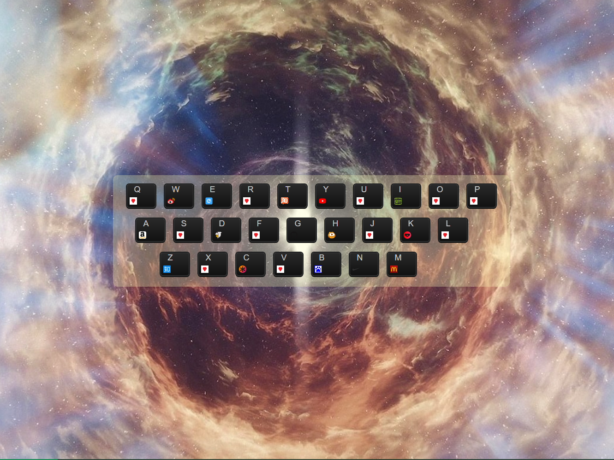

ABOUTME
我叫冉奇，今年24岁，来自陕西汉中。2017年于西安交通大学城市学院机械工程系本科毕业。后从事一年专业工作，因喜欢计算机编程后离职自学前端技术，希望可以成为一名前端开发工作者。
PRODUCTION
小小画板
描述：该项目使用原生JS实现，主要调用 Canvas API，实现了划线、调色、橡皮擦、保存等功能。由我自己开发。
键盘导航

描述：该项目使用原生JS和CSS实现，使用了DOM API实现了把hash表里的值渲染到页面上，在使用CSS调整成键盘的样式。通过监听键盘事件onkeypress得到按下键盘上的键跳转到键对应的网站。
仿CNode社区
描述：该项目用Vue.js实现，项目模块组件：Header模块、PostList模块、Article模块、Slider侧边栏模块、UserInfo用户个人中心模块、Pagination分页组件。通过vue-router路由跳转实现各个组件页面之间的跳转。通过CNode相关API使用axios拿到各个数据，父子组件之间进行数据传递，实现该页面。
画一只皮卡丘
描述：该项目使用原生JS实现，主要调用 Canvas API，实现了划线、调色、橡皮擦、保存等功能。完全由我独立开发。用 XXX 实现了 XXX 功能，用 XXX 实现了 XXX 功能。
EXPERIENCE
2017.7 ~ 2018.8
在浙江嘉兴从事模具设计行业。
2017.8 ~ NOW
自学前端。